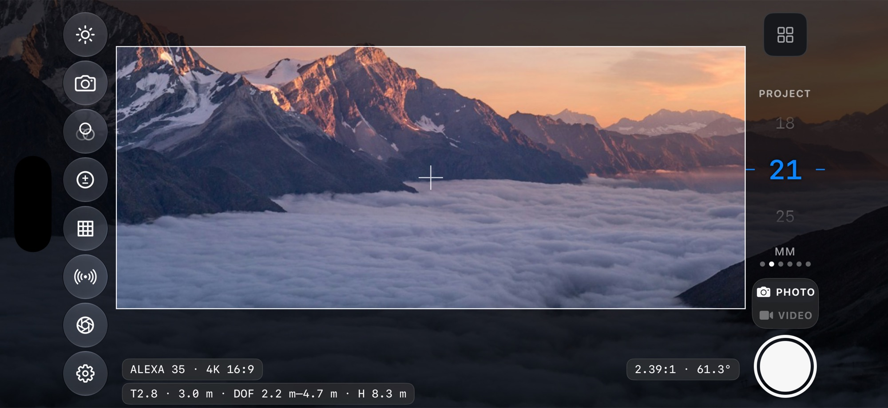
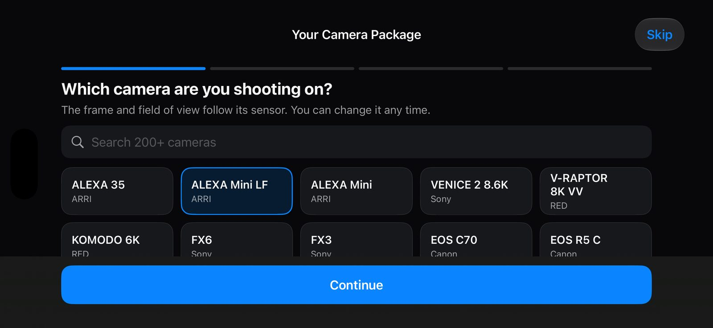
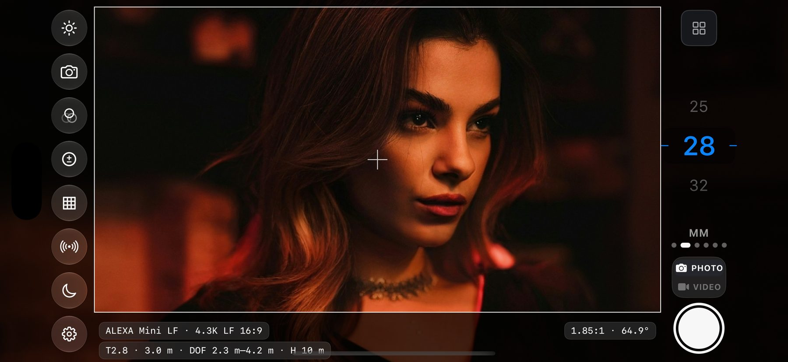
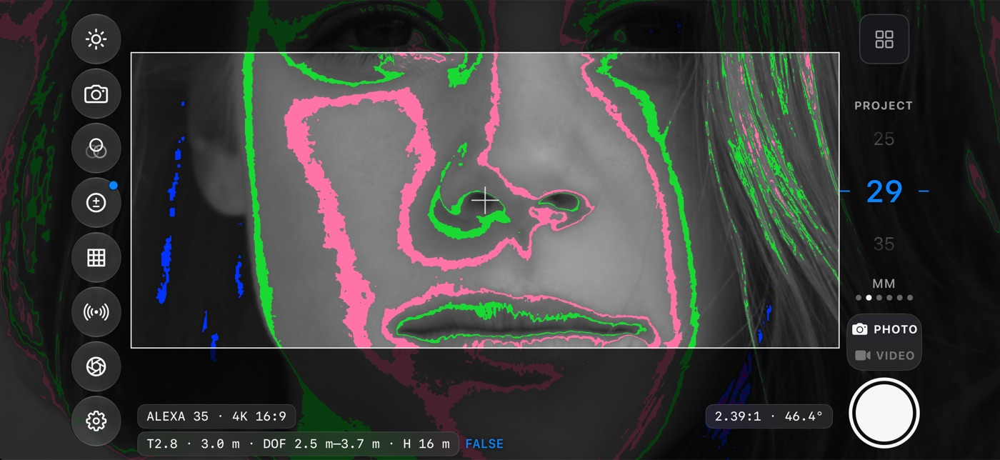
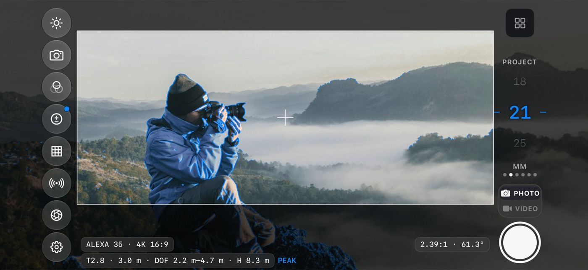
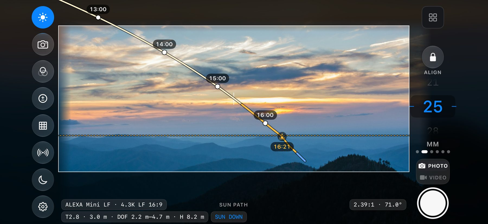
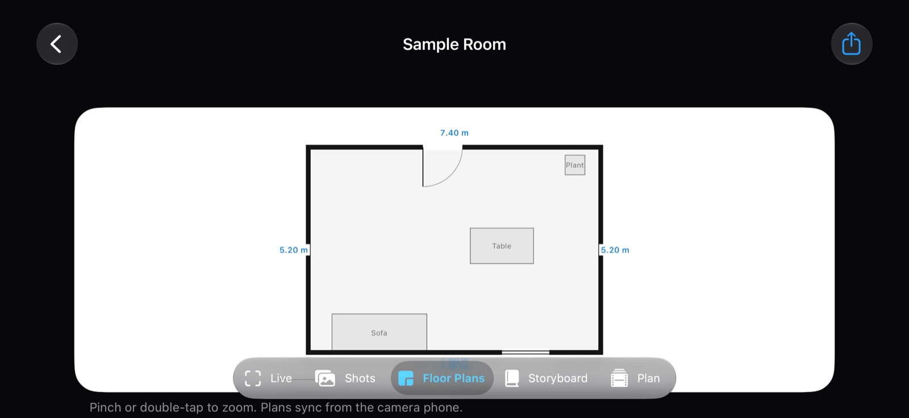
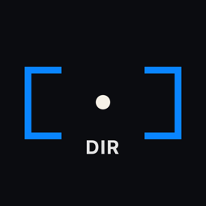
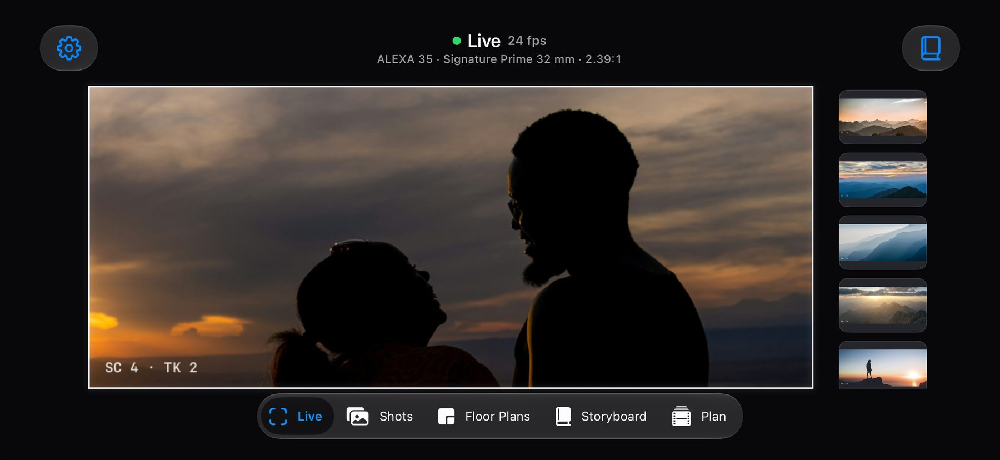
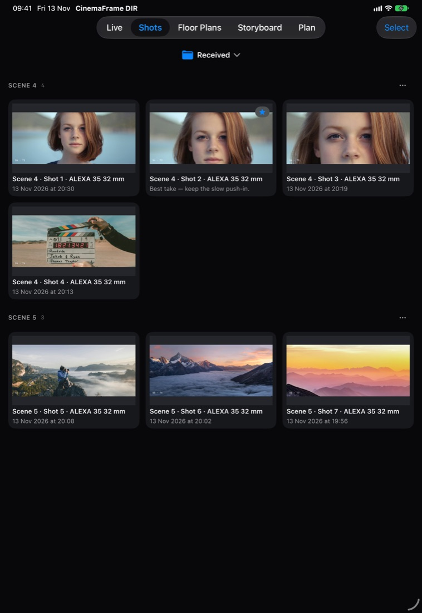

<meta charset="utf-8">
<meta name="viewport" content="width=device-width, initial-scale=1, viewport-fit=cover">
<title>CinemaFrame</title>
<meta name="claude:viewport-fit-sides" content="cover">
<meta name="description" content="CinemaFrame: your cinema camera’s viewfinder on iPhone, and a director’s monitor on iPhone and iPad.">
<link rel="preconnect" href="https://fonts.googleapis.com">
<link rel="preconnect" href="https://fonts.gstatic.com" crossorigin>
<link rel="stylesheet" href="https://fonts.googleapis.com/css2?family=Inter:wght@400;500;600;700&display=swap">
<link rel="icon" href="img/icon-dop.png">
<link rel="apple-touch-icon" href="img/icon-dop.png">
<style>
/* Layout: a product page in the Apple manner. Black stage, centred chapter openers, real screenshots
   in device frames, bento tiles for the detail. Color comes from the subject: dusk orange for the
   camera and sun, the app's own system blue for the director link, red only for REC. */
:root {
  --bg: #000;
  --tile: #141416;
  --tile-2: #1d1d1f;
  --line: rgba(245,245,247,.12);
  --fg: #f5f5f7;
  --fg-2: #a1a1a6;
  --fg-3: #6e6e73;
  --blue: #2997ff;
  --blue-btn: #0a84ff;
  --sun: #ffb340;
  --sun-2: #ff7a3d;
  --rec: #ff453a;
  --green: #32d74b;
  --dusk: linear-gradient(92deg, #ffd27a 0%, #ff9f40 45%, #ff6a3d 100%);
  --sky: linear-gradient(92deg, #7cc4ff 0%, #2997ff 55%, #5e5ce6 100%);
  --font: -apple-system, BlinkMacSystemFont, "SF Pro Display", "SF Pro Text", Inter, "Helvetica Neue", Arial, sans-serif;
  --mono: ui-monospace, "SF Mono", SFMono-Regular, Menlo, Consolas, monospace;
  --r-tile: 22px;
  --ease: cubic-bezier(.2, .8, .2, 1);
  color-scheme: dark;
}
* { box-sizing: border-box; }
html { scroll-behavior: smooth; scroll-padding-top: 64px; }
body { background: var(--bg); color: var(--fg); font-family: var(--font); font-size: 16px; line-height: 1.47; letter-spacing: -.012em; -webkit-font-smoothing: antialiased; overflow-x: hidden; }
body::before { content: ""; position: fixed; inset: 0 0 auto; height: env(safe-area-inset-top, 0px); z-index: 30; background: var(--bg); }
img { display: block; max-width: 100%; height: auto; }
a { color: inherit; }
h1, h2, h3 { margin: 0; font-weight: 700; text-wrap: balance; }
p { margin: 0; }
:focus-visible { outline: 2px solid var(--blue); outline-offset: 3px; border-radius: 8px; }
.wrap { max-width: 980px; margin: 0 auto; padding-left: max(22px, env(safe-area-inset-left, 0px)); padding-right: max(22px, env(safe-area-inset-right, 0px)); }
.wrap.wide { max-width: 1120px; }
.mono { font-family: var(--mono); font-variant-numeric: tabular-nums; letter-spacing: 0; }
.dusk-text { background: var(--dusk); -webkit-background-clip: text; background-clip: text; color: transparent; }
.sky-text { background: var(--sky); -webkit-background-clip: text; background-clip: text; color: transparent; }

/* nav: translucent material, content scrolls under it */
.nav { position: sticky; top: env(safe-area-inset-top, 0px); z-index: 20; background: rgba(22,22,23,.72); backdrop-filter: saturate(180%) blur(20px); -webkit-backdrop-filter: saturate(180%) blur(20px); }
.nav::after { content: ""; position: absolute; inset: auto 0 0; height: 1px; background: var(--line); }
.nav .wrap { display: flex; align-items: center; gap: 22px; height: 48px; max-width: 980px; }
.brand { display: flex; align-items: center; gap: 9px; text-decoration: none; font-weight: 600; font-size: 1.0625rem; letter-spacing: -.01em; }
.brand img { width: 26px; height: 26px; border-radius: 7px; }
.nav-links { display: flex; gap: 26px; margin-left: auto; font-size: .8125rem; }
.nav-links a { text-decoration: none; color: rgba(245,245,247,.8); transition: color .2s ease; }
.nav-links a:hover { color: var(--fg); }
.nav .btn { padding: 6px 14px; font-size: .8125rem; }
@media (max-width: 860px) { .nav-links { display: none; } .nav .btn { margin-left: auto; } }
@media (max-width: 380px) { .brand span { display: none; } }

.btn { display: inline-flex; align-items: center; justify-content: center; gap: 6px; padding: 10px 20px; border-radius: 999px; font-size: 1rem; font-weight: 500; text-decoration: none; white-space: nowrap; border: 0; transition: transform .1s ease-out, background-color .2s ease; }
.btn:active { transform: scale(.97); }
.btn-blue { background: var(--blue-btn); color: #fff; }
.btn-blue:hover { background: #2a95ff; }
.link { color: var(--blue); text-decoration: none; font-size: 1rem; }
.link:hover { text-decoration: underline; }
.link::after { content: " ›"; }
.chapter-head p .link { font-size: inherit; white-space: nowrap; }

/* hero */
.hero { text-align: center; padding-block: clamp(48px, 6vw, 72px) 0; overflow: hidden; }
.hero .eyebrow { font-size: clamp(1.125rem, 1.6vw, 1.375rem); font-weight: 600; letter-spacing: -.015em; display: inline-flex; align-items: center; gap: 10px; }
.hero .eyebrow img { width: 30px; height: 30px; border-radius: 8px; }
.hero h1 { font-size: clamp(2.5rem, 5.6vw, 4.5rem); line-height: 1.04; letter-spacing: -.04em; margin-top: 14px; }
.hero h1 span { display: block; }
.hero .sub { font-size: clamp(1.0625rem, 1.5vw, 1.25rem); line-height: 1.4; letter-spacing: -.015em; color: var(--fg-2); max-width: 34em; margin: 18px auto 0; }
.hero .sub b { color: var(--fg); font-weight: 600; }
.hero .ctas { display: flex; gap: 14px 28px; justify-content: center; align-items: center; flex-wrap: wrap; margin-top: 26px; }
.hero-device { margin: clamp(40px, 5vw, 60px) auto 0; max-width: 900px; position: relative; }
.hero-device::before { content: ""; position: absolute; inset: 10% 5% -10%; background: radial-gradient(50% 50% at 50% 55%, rgba(255,140,60,.38), transparent 70%); filter: blur(40px); z-index: -1; }
.hero .note { color: var(--fg-3); font-size: .875rem; margin-top: 22px; padding-bottom: 8px; }

/* device frames, sized from the real screenshot ratios (iPhone 2868×1320, iPad 1668×2420) */
.phone { position: relative; background: #0b0b0c; border-radius: clamp(22px, 5.4vw, 64px); padding: clamp(6px, 1.05vw, 13px); box-shadow: inset 0 0 0 1.5px #3a3a3d, inset 0 0 0 4px #1a1a1c, 0 40px 90px -30px rgba(0,0,0,.9); }
.phone img { border-radius: clamp(16px, 4.4vw, 52px); width: 100%; aspect-ratio: 2868 / 1320; object-fit: cover; }
.phone.sm { border-radius: clamp(18px, 3.2vw, 40px); padding: clamp(5px, .7vw, 9px); }
.phone.sm img { border-radius: clamp(13px, 2.6vw, 32px); }
.ipad { background: #0b0b0c; border-radius: clamp(20px, 3vw, 34px); padding: clamp(8px, 1.2vw, 14px); box-shadow: inset 0 0 0 1.5px #3a3a3d, 0 40px 90px -30px rgba(0,0,0,.9); }
.ipad img { border-radius: clamp(12px, 1.9vw, 22px); width: 100%; aspect-ratio: 758 / 1100; object-fit: cover; }

/* numbers */
.numbers { padding-block: clamp(64px, 8vw, 96px) 0; }
.numbers .grid4 { display: grid; grid-template-columns: repeat(4, minmax(0, 1fr)); gap: 32px; text-align: center; }
.numbers strong { display: block; font-size: clamp(2.25rem, 4vw, 3.25rem); line-height: 1; letter-spacing: -.035em; font-weight: 700; font-variant-numeric: tabular-nums; }
.numbers span { display: block; margin-top: 10px; color: var(--fg-2); font-size: .9375rem; line-height: 1.35; max-width: 15em; margin-inline: auto; }
@media (max-width: 760px) { .numbers .grid4 { grid-template-columns: repeat(2, minmax(0, 1fr)); gap: 40px 20px; } }

/* chapters */
.chapter { padding-block: clamp(80px, 10vw, 128px) 0; }
.chapter-head { text-align: center; max-width: 760px; margin: 0 auto; }
.chapter-head .kicker { font-size: clamp(1rem, 1.3vw, 1.125rem); font-weight: 600; letter-spacing: -.01em; }
.chapter-head h2 { font-size: clamp(2.125rem, 4.2vw, 3.25rem); line-height: 1.08; letter-spacing: -.035em; margin-top: 10px; }
.chapter-head p { font-size: clamp(1.0625rem, 1.4vw, 1.1875rem); line-height: 1.42; letter-spacing: -.012em; color: var(--fg-2); margin: 18px auto 0; max-width: 34em; }
.chapter-head p b { color: var(--fg); font-weight: 600; }
.k-sun { color: var(--sun); } .k-blue { color: var(--blue); } .k-green { color: var(--green); }
.stage { margin-top: clamp(40px, 5vw, 56px); }

/* bento */
.bento { display: grid; grid-template-columns: repeat(6, minmax(0, 1fr)); gap: 14px; margin-top: 14px; }
.tile { background: var(--tile); border-radius: var(--r-tile); padding: clamp(22px, 2.6vw, 32px); display: flex; flex-direction: column; gap: 12px; min-width: 0; overflow: hidden; position: relative; }
.tile.s2 { grid-column: span 2; } .tile.s3 { grid-column: span 3; } .tile.s4 { grid-column: span 4; } .tile.s6 { grid-column: span 6; }
.tile h3 { font-size: clamp(1.3125rem, 1.9vw, 1.5rem); line-height: 1.15; letter-spacing: -.025em; }
.tile p { color: var(--fg-2); font-size: .9688rem; line-height: 1.45; }
.tile p b { color: var(--fg); font-weight: 600; }
.tile .big { font-size: clamp(2.25rem, 3.6vw, 3rem); font-weight: 700; letter-spacing: -.04em; line-height: 1; }
.tile .label { font-size: .8125rem; font-weight: 600; color: var(--fg-3); letter-spacing: .01em; }
.tile .fill { margin-top: auto; }
@media (max-width: 900px) { .tile.s2, .tile.s3, .tile.s4 { grid-column: span 3; } }
@media (min-width: 641px) and (max-width: 900px) { .bento > .tile.s2:nth-child(3):last-child { grid-column: span 6; } }
@media (max-width: 640px) { .bento { grid-template-columns: minmax(0, 1fr); } .tile.s2, .tile.s3, .tile.s4, .tile.s6 { grid-column: auto; } }
.split { display: grid; grid-template-columns: minmax(0, 1fr) minmax(0, 1.25fr); gap: clamp(24px, 4vw, 56px); align-items: center; }
.split.rev { grid-template-columns: minmax(0, 1.25fr) minmax(0, 1fr); }
@media (max-width: 860px) { .split, .split.rev { grid-template-columns: minmax(0, 1fr); } }

.chips { display: flex; flex-wrap: wrap; gap: 8px; }
.chip { font-size: .875rem; font-weight: 500; padding: 7px 13px; border-radius: 999px; background: var(--tile-2); color: var(--fg); letter-spacing: -.005em; }
.chip.mono { font-size: .8125rem; }

/* lens table */
.scroll-x { overflow-x: auto; }
.lens { width: 100%; border-collapse: collapse; font-size: .875rem; font-variant-numeric: tabular-nums; }
.lens th { text-align: left; font-weight: 500; color: var(--fg-3); padding: 0 12px 10px 0; white-space: nowrap; font-size: .75rem; }
.lens td { padding: 11px 12px 11px 0; border-top: 1px solid var(--line); white-space: nowrap; color: var(--fg-2); }
.lens td:first-child { color: var(--fg); font-weight: 500; }
.lens .ok { color: var(--green); } .lens .warn { color: var(--sun); }

/* exposure tools: tiny meters drawn in CSS */
.tools { display: grid; grid-template-columns: repeat(3, minmax(0, 1fr)); gap: 16px; }
@media (max-width: 760px) { .tools { grid-template-columns: minmax(0, 1fr); } }
.meter { height: 64px; border-radius: 12px; overflow: hidden; }
.meter.false { background: linear-gradient(90deg, #6a2bd9 0 8%, #2c62ff 8% 20%, #4a4a4a 20% 42%, #4fd16a 42% 52%, #8e8e8e 52% 74%, #ffd23a 74% 86%, #ff3b30 86%); }
.meter.zebra { background: repeating-linear-gradient(135deg, rgba(255,255,255,.95) 0 6px, rgba(0,0,0,.0) 6px 12px), linear-gradient(90deg, #2a2a2e, #c9c9cf); }
.meter.peak { background: radial-gradient(circle at 30% 50%, transparent 18px, #ff2d55 19px 20px, transparent 21px), radial-gradient(circle at 62% 46%, transparent 10px, #ff2d55 11px 12px, transparent 13px), linear-gradient(90deg, #1c1c1f, #2b2b30); }

/* look switcher on the real viewfinder */
.look-stage .phone img { transition: filter .45s var(--ease); }
.seg { display: inline-flex; flex-wrap: wrap; justify-content: center; gap: 4px; padding: 4px; border-radius: 999px; background: var(--tile-2); margin: 28px auto 0; }
.seg button { appearance: none; border: 0; background: transparent; color: var(--fg-2); font: 500 .875rem/1 var(--font); padding: 9px 15px; border-radius: 999px; cursor: pointer; transition: background-color .25s var(--ease), color .25s var(--ease), transform .1s ease-out; }
.seg button:active { transform: scale(.96); }
.seg button[aria-pressed="true"] { background: var(--fg); color: #000; }
.center { text-align: center; }

/* depth of field scale */
.dof svg { width: 100%; height: auto; display: block; }

/* framed photo with data strip */
.framed { background: #fff; border-radius: 6px; padding: 10px 10px 0; box-shadow: 0 30px 70px -30px rgba(0,0,0,.9); transform: rotate(-1.2deg); }
.framed .pic { aspect-ratio: 2.39 / 1; overflow: hidden; border-radius: 2px; }
.framed .pic img { width: 100%; height: 100%; object-fit: cover; object-position: 40% 40%; }
.strip { display: grid; grid-template-columns: repeat(3, minmax(0, 1fr)); gap: 4px 12px; padding: 12px 4px 14px; font-family: var(--mono); font-size: clamp(.5625rem, 1.05vw, .75rem); color: #1d1d1f; letter-spacing: 0; }
.strip span { white-space: nowrap; overflow: hidden; text-overflow: ellipsis; }
.strip b { font-weight: 600; }

/* plan & rental mocks, drawn in the app's own list style */
.ui { background: #000; border-radius: 18px; border: 1px solid var(--line); padding: 16px; font-size: .875rem; }
.ui-title { font-weight: 600; text-align: center; padding-bottom: 12px; font-size: .9375rem; }
.formats { display: flex; flex-wrap: wrap; gap: 8px; }
.formats span { font-size: .8125rem; font-weight: 600; padding: 8px 12px; border-radius: 10px; background: var(--tile-2); }
.shotrow { display: grid; grid-template-columns: 30px 72px minmax(0, 1fr); gap: 12px; align-items: center; padding: 9px 0; border-top: 1px solid var(--line); }
.shotrow:first-of-type { border-top: 0; }
.shotrow b { font-variant-numeric: tabular-nums; }
.shotrow i { aspect-ratio: 16 / 9; border-radius: 6px; display: block; background: linear-gradient(180deg, #2b3657, #c27a5e 75%, #141012 76%); }
.shotrow i.b { background: linear-gradient(180deg, #1d2742, #5a4a6c 70%, #0f0c0e 71%); }
.shotrow i.c { background: linear-gradient(160deg, #6d4b3a, #e1a067 60%, #2a1a14); }
.shotrow span { min-width: 0; color: var(--fg-2); }
.shotrow span em { display: block; font-style: normal; color: var(--fg); font-weight: 500; overflow: hidden; text-overflow: ellipsis; white-space: nowrap; }
.files { display: flex; gap: 12px; }
.file { width: 70px; aspect-ratio: 3 / 4; border-radius: 10px; background: var(--tile-2); display: grid; place-items: end center; padding-bottom: 10px; font-size: .75rem; font-weight: 700; box-shadow: inset 0 0 0 1px var(--line); }
.file.pdf { color: var(--rec); } .file.key { color: var(--sun); } .file.xls { color: var(--green); }
.group { font-size: .6875rem; font-weight: 600; color: var(--fg-3); letter-spacing: .06em; text-transform: uppercase; padding: 14px 4px 6px; }
.group:first-child { padding-top: 0; }
.rows { background: var(--tile-2); border-radius: 12px; }
.rows div { display: grid; grid-template-columns: minmax(0, 1fr) auto; gap: 12px; padding: 11px 14px; border-top: 1px solid var(--line); }
.rows div:first-child { border-top: 0; }
.rows span:first-child { overflow: hidden; text-overflow: ellipsis; white-space: nowrap; }
.rows span:last-child { color: var(--fg-2); font-variant-numeric: tabular-nums; }

/* DIR */
.dir-stage { display: grid; grid-template-columns: minmax(0, 2.2fr) minmax(0, 1fr); gap: clamp(20px, 3vw, 40px); align-items: end; }
@media (max-width: 760px) { .dir-stage { grid-template-columns: minmax(0, 1fr); } .dir-stage .ipad { max-width: 320px; margin: 0 auto; } }
.qualities { display: grid; gap: 8px; font-size: .9375rem; }
.qualities div { display: grid; grid-template-columns: minmax(0, 1fr) auto auto; gap: 14px; padding: 10px 0; border-top: 1px solid var(--line); }
.qualities div:first-child { border-top: 0; }
.qualities span { color: var(--fg-2); font-variant-numeric: tabular-nums; }
.qualities span:first-child { color: var(--fg); font-weight: 500; }

/* trust */
.trust { display: grid; grid-template-columns: repeat(3, minmax(0, 1fr)); gap: 16px; }
@media (max-width: 860px) { .trust { grid-template-columns: minmax(0, 1fr); } }
.glyph { width: 44px; height: 44px; border-radius: 12px; display: grid; place-items: center; background: var(--tile-2); }
.glyph svg { width: 22px; height: 22px; }

/* download */
.download { padding-block: clamp(88px, 11vw, 140px) clamp(64px, 8vw, 96px); text-align: center; }
.download h2 { font-size: clamp(2.25rem, 4.4vw, 3.5rem); letter-spacing: -.04em; line-height: 1.04; }
.download p { color: var(--fg-2); font-size: clamp(1.0625rem, 1.4vw, 1.1875rem); margin: 18px auto 0; max-width: 32em; }
.apps { display: flex; justify-content: center; gap: clamp(28px, 5vw, 56px); margin-top: 40px; flex-wrap: wrap; }
.app { display: grid; justify-items: center; gap: 12px; }
.app img { width: 92px; height: 92px; border-radius: 21px; box-shadow: 0 24px 50px -20px rgba(0,0,0,.9), 0 0 0 1px rgba(255,255,255,.06); }
.app b { font-size: 1.0625rem; letter-spacing: -.015em; }
.app span { color: var(--fg-2); font-size: .9375rem; margin-top: -8px; }
footer { border-top: 1px solid var(--line); padding-block: 22px 40px; color: var(--fg-3); font-size: .75rem; line-height: 1.5; }
footer .wrap { display: flex; flex-wrap: wrap; gap: 8px 24px; justify-content: space-between; align-items: baseline; }
.foot-links { display: flex; flex-wrap: wrap; gap: 6px 20px; }
footer a { color: var(--fg-2); text-decoration: none; }
footer a:hover { color: var(--fg); text-decoration: underline; }
.foot-note { max-width: 46em; }

/* motion: content is visible at rest; where scroll timelines exist, chapters rise into place */
@supports (animation-timeline: view()) {
  @media (prefers-reduced-motion: no-preference) {
    .rise { animation: rise linear both; animation-timeline: view(); animation-range: entry 0% entry 55%; }
    .hero-device { animation: settle linear both; animation-timeline: view(); animation-range: exit -20% exit 60%; }
  }
}
@keyframes rise { from { opacity: 0; translate: 0 48px; } }
@keyframes settle { to { scale: .94; opacity: .55; } }
@media (prefers-reduced-motion: reduce) { html { scroll-behavior: auto; } *, *::before, *::after { transition: none !important; animation: none !important; } }
@media (prefers-reduced-transparency: reduce) { .nav { background: #161617; backdrop-filter: none; -webkit-backdrop-filter: none; } }
</style>

<nav class="nav" aria-label="Main">
  <div class="wrap">
    <a class="brand" href="#top"><span>CinemaFrame</span></a>
    <div class="nav-links">
      <a href="#viewfinder">Viewfinder</a>
      <a href="#light">Sun</a>
      <a href="#prep">Pre-production</a>
      <a href="#dir">Director</a>
    </div>
    <a class="btn btn-blue" href="#download">Beta</a>
  </div>
</nav>

<header class="hero" id="top">
  <div class="wrap">
    <div class="eyebrow">CinemaFrame</div>
    <h1><span>Your cinema camera’s frame.</span><span class="dusk-text">On iPhone.</span></h1>
    <p class="sub">Choose the camera, the format and the lens, and iPhone shows exactly what they will see. Depth of field, the sun’s path and exposure tools sit right in the frame, and the director watches the same picture in <b>DIR</b>.</p>
    <div class="ctas">
      <a class="btn btn-blue" href="#download">Join the beta</a>
      <a class="link" href="#viewfinder">See what it does</a>
    </div>
  </div>
  <div class="wrap wide">
    <div class="hero-device">
      <div class="phone"></div>
    </div>
    <p class="note">A real app screen. The simulator has no camera, so the picture is a photo fed through the same pipeline.</p>
  </div>
</header>

<section class="numbers" aria-label="Built-in references">
  <div class="wrap">
    <div class="grid4">
      <div class="rise"><strong>220</strong><span>cinema cameras with real sensor formats</span></div>
      <div class="rise"><strong>1,024</strong><span>lens series, spherical and anamorphic</span></div>
      <div class="rise"><strong>110</strong><span>lens makers in the catalog</span></div>
      <div class="rise"><strong>573</strong><span>filters, from ND to diffusion</span></div>
    </div>
  </div>
</section>

<!-- VIEWFINDER -->
<section class="chapter" id="viewfinder" aria-labelledby="vf-h">
  <div class="wrap">
    <div class="chapter-head rise">
      <div class="kicker k-sun">Viewfinder</div>
      <h2 id="vf-h">It knows your camera.</h2>
      <p>The frame is built from the sensor’s real millimeters and the lens’s focal length. Photos and video keep exactly what is inside the frame, and EXIF records <b>the cinema lens, not the phone</b>.</p>
    </div>
    <div class="stage rise">
      <div class="phone sm"></div>
    </div>
    <div class="bento">
      <article class="tile s2 rise">
        <span class="label">Set up</span>
        <div class="big">30&nbsp;<span style="font-size:.5em;letter-spacing:-.02em">sec</span></div>
        <p>That’s how long the first launch takes: camera, lenses, aspect ratio and three tips.</p>
      </article>
      <article class="tile s2 rise">
        <span class="label">Anamorphic</span>
        <div class="big">2×</div>
        <p>Desqueeze at <b>1.33×, 1.5× and 2×</b>, so an anamorphic frame looks the way it will in the edit.</p>
      </article>
      <article class="tile s2 rise">
        <span class="label">Frame guides</span>
        <div class="big">90/80</div>
        <p>Action- and title-safe areas, a grid and a level. The ring on the right holds only the controls you switched on.</p>
      </article>
      <article class="tile s6 rise">
        <div class="split">
          <div style="display:grid;gap:14px">
            <span class="label">Lenses</span>
            <h3>Vignetting, caught on the recce.</h3>
            <p>Focal lengths follow the real lens series. Popular series also carry their T-stop, image circle and mount, so CinemaFrame warns you when a lens doesn’t cover the sensor.</p>
          </div>
          <div class="scroll-x">
            <table class="lens">
              <thead><tr><th>Series</th><th>T</th><th>Image circle</th><th>Mount</th><th>ALEXA 35 · Open Gate</th></tr></thead>
              <tbody>
                <tr><td>Signature Prime</td><td>1.8</td><td>46.3 mm</td><td>LPL</td><td class="ok">Covers</td></tr>
                <tr><td>Supreme Prime</td><td>1.5</td><td>46.2 mm</td><td>PL</td><td class="ok">Covers</td></tr>
                <tr><td>Master Prime</td><td>1.3</td><td>33.5 mm</td><td>PL</td><td class="warn">Vignettes</td></tr>
                <tr><td>Ultra Prime</td><td>1.9</td><td>31.5 mm</td><td>PL</td><td class="warn">Vignettes</td></tr>
              </tbody>
            </table>
          </div>
        </div>
      </article>
    </div>
  </div>
</section>

<!-- EXPOSURE & LOOK -->
<section class="chapter" id="exposure" aria-labelledby="ex-h">
  <div class="wrap">
    <div class="chapter-head rise">
      <div class="kicker k-sun">Exposure and color</div>
      <h2 id="ex-h">On-set monitor tools. In your pocket.</h2>
      <p>False Color, zebras and focus peaking work just like on a field monitor. Looks and your own LUTs apply live and are <b>baked into photos and video</b>.</p>
    </div>
    <div class="stage look-stage rise">
      <div class="phone sm"></div>
      <div class="center">
        <div class="seg" role="group" aria-label="Look" id="looks">
          <button type="button" aria-pressed="true" data-filter="none">Neutral</button>
          <button type="button" aria-pressed="false" data-filter="contrast(1.14) saturate(.92)">Filmic</button>
          <button type="button" aria-pressed="false" data-filter="contrast(1.1) saturate(1.3) hue-rotate(-10deg)">Teal &amp; Orange</button>
          <button type="button" aria-pressed="false" data-filter="contrast(1.32) saturate(.45)">Bleach Bypass</button>
          <button type="button" aria-pressed="false" data-filter="grayscale(1) contrast(1.12)">Black &amp; White</button>
          <button type="button" aria-pressed="false" data-filter="saturate(.55) brightness(.6) contrast(1.15) hue-rotate(190deg)">Day for Night</button>
        </div>
        <p style="color:var(--fg-3);font-size:.875rem;margin-top:14px">Built-in looks, plus importing your own .cube LUT. The preview here is approximate.</p>
      </div>
    </div>
    <div class="bento" style="margin-top:40px">
      <article class="tile s3 rise">
        <div class="phone sm"></div>
        <h3>False Color</h3>
        <p>Exposure by zone in color: what’s crushed, what’s skin, what’s clipping.</p>
      </article>
      <article class="tile s3 rise">
        <div class="phone sm"></div>
        <h3>Focus peaking</h3>
        <p>Sharp edges light up, and the focus point is easy to read at a glance.</p>
      </article>
    </div>
    <div class="bento">
      <article class="tile s2 rise"><div class="meter zebra" aria-hidden="true"></div><h3>Zebras</h3><p>Stripes over highlights from the level you set.</p></article>
      <article class="tile s2 rise">
        <span class="label">Manual control</span>
        <h3>ISO, shutter angle, white balance.</h3>
        <p>Exposure in the terms a camera crew uses: shutter in degrees, temperature and tint on the ring.</p>
      </article>
      <article class="tile s2 rise">
        <span class="label">Recording</span>
        <h3>ProRes and Apple Log.</h3>
        <div class="chips fill"><span class="chip">ProRes 422 HQ</span><span class="chip">422</span><span class="chip">LT</span><span class="chip">Proxy</span><span class="chip">HEVC</span><span class="chip">Apple Log</span><span class="chip">HLG</span></div>
        <p style="font-size:.8125rem;color:var(--fg-3)">ProRes and Log on iPhone models that support them.</p>
      </article>
    </div>
  </div>
</section>

<!-- FOCUS -->
<section class="chapter" id="focus" aria-labelledby="fo-h">
  <div class="wrap">
    <div class="chapter-head rise">
      <div class="kicker k-blue">Focus</div>
      <h2 id="fo-h">Depth of field you can read.</h2>
      <p>T and DIST rings sit to the right of the frame. Below it, a line shows the zone of sharpness and the hyperfocal distance. <b>LiDAR</b> measures the distance to the subject.</p>
    </div>
    <div class="tile dof stage rise" style="padding-block:clamp(28px,4vw,48px)">
      <svg viewBox="0 0 360 96" role="img" aria-label="Focus scale: focus at 3 m, sharp from 2.7 to 3.4 m, hyperfocal 23 m">
        <rect x="12" y="40" width="336" height="4" rx="2" fill="#2c2c2e"/>
        <rect x="135" y="35" width="16.8" height="14" rx="4" fill="#2997ff"/>
        <line x1="142.7" y1="27" x2="142.7" y2="57" stroke="#ffb340" stroke-width="2"/>
        <line x1="291.3" y1="31" x2="291.3" y2="53" stroke="#a1a1a6" stroke-width="1.5" stroke-dasharray="2 2"/>
        <g font-family="ui-monospace, SF Mono, Menlo, monospace" font-size="9" fill="#6e6e73" text-anchor="middle">
          <text x="12" y="72">0.5</text><text x="62.4" y="72">1</text><text x="113" y="72">2</text><text x="180" y="72">5</text><text x="230.4" y="72">10</text><text x="280.8" y="72">20</text><text x="348" y="72">∞</text>
        </g>
        <g font-family="ui-monospace, SF Mono, Menlo, monospace" font-size="9.5" text-anchor="middle">
          <text x="142.7" y="18" fill="#ffb340">DIST 3.0 m</text>
          <text x="143.4" y="90" fill="#2997ff">DOF 2.7–3.4 m</text>
          <text x="291.3" y="22" fill="#a1a1a6">H 23 m</text>
        </g>
      </svg>
      <p class="center mono" style="color:var(--fg-3);font-size:.8125rem;margin-top:8px">ALEXA 35 · 4K 16:9 · 35 mm · T2.8</p>
    </div>
  </div>
</section>

<!-- SUN -->
<section class="chapter" id="light" aria-labelledby="sun-h">
  <div class="wrap">
    <div class="chapter-head rise">
      <div class="kicker k-sun">Sun and Moon</div>
      <h2 id="sun-h"><span>Know where the sun will be.</span> <span class="dusk-text">Before the shoot day.</span></h2>
      <p>Point the phone at the horizon and the sun’s path for the whole day appears over the live frame, hour by hour. Shoot photos and video with the line in place to keep for the crew.</p>
    </div>
    <div class="stage rise">
      <div class="phone"></div>
    </div>
    <div class="bento">
      <article class="tile s2 rise"><h3>Align</h3><p>If the compass drifts, nudge the sky by hand. The whole arc moves together and never bends.</p></article>
      <article class="tile s2 rise"><h3>Sun map</h3><p>The sun’s arc over the location by the hour, shadows, sunrise and sunset, for any date.</p></article>
      <article class="tile s2 rise"><h3>Moon</h3><p>Path, phase, moonrise and moonset for night scenes.</p></article>
    </div>
  </div>
</section>

<!-- SHOTS -->
<section class="chapter" id="shots" aria-labelledby="sh-h">
  <div class="wrap">
    <div class="chapter-head rise">
      <div class="kicker k-sun">Shots</div>
      <h2 id="sh-h">Every take, with its details.</h2>
      <p>A strip under a framed photo and an end slate on video record what the shot was made with. Takes are sorted by scene, and deleted ones wait 30 days in Recently Deleted.</p>
    </div>
    <div class="split stage">
      <div class="framed rise" aria-label="Example photo with a data strip">
        <div class="pic"></div>
        <div class="strip">
          <span><b>ALEXA 35</b> · 4K 16:9</span><span>Signature 35 mm</span><span>2.39:1 · FOV 39.1°</span>
          <span>Scene 4 · Shot 2</span><span>Filmic</span><span>T2.8 · 3.0 m</span>
          <span>Nov 13, 2026 · 18:24</span><span>Heading 236° · tilt 2°</span><span>CinemaFrame</span>
        </div>
      </div>
      <div style="display:grid;gap:16px">
        <article class="tile rise"><h3>Edit right there</h3><p>Trim video like in Photos and add a title card before the clip. It saves as a new shot, and the original stays untouched.</p></article>
        <article class="tile rise"><h3>Pick the best</h3><p>Select several takes at once: star them, send them to Plan or Photos, share or delete.</p></article>
      </div>
    </div>
  </div>
</section>

<!-- PRE-PRODUCTION -->
<section class="chapter" id="prep" aria-labelledby="pr-h">
  <div class="wrap">
    <div class="chapter-head rise">
      <div class="kicker k-green">Pre-production</div>
      <h2 id="pr-h">From an agency storyboard to a shot list. In one import.</h2>
      <p>Plan reads a storyboard in almost any format, splits it into shots and sends it back out as a PDF, a presentation or a spreadsheet. Rental puts the gear order together by shoot day.</p>
    </div>
    <div class="bento stage">
      <article class="tile s2 rise">
        <span class="label">1 · Import</span>
        <h3>Any storyboard</h3>
        <p>Each panel becomes a shot with its picture, number and columns. Flat PDFs and scans are split too, and captions are read from the image.</p>
        <div class="formats fill"><span>PDF</span><span>Scan</span><span>Word</span><span>Excel</span><span>PowerPoint</span><span>Keynote</span><span>Pages</span><span>Google Docs</span></div>
      </article>
      <article class="tile s2 rise">
        <span class="label">2 · Plan</span>
        <h3>A shot list with the pre-shoot</h3>
        <p>Storyboard and pre-shoot side by side. Numbers 1, 2, 3 with phases 1a and 1b, voice-over in its own column.</p>
        <div class="ui fill" aria-hidden="true">
          <div class="shotrow"><b>1</b><i></i><span><em>Wide, woman at the window</em>3 s</span></div>
          <div class="shotrow"><b>1a</b><i class="b"></i><span><em>Push in on hands, VO</em>2 s</span></div>
          <div class="shotrow"><b>2</b><i class="c"></i><span><em>Close-up, backlight</em>4 s</span></div>
        </div>
      </article>
      <article class="tile s2 rise">
        <span class="label">3 · Export</span>
        <h3>A document for the whole crew</h3>
        <p>PDF with previews and the room plan, slides for Keynote and PowerPoint, a sheet for Excel and Numbers.</p>
        <div class="files fill" aria-hidden="true"><div class="file pdf">PDF</div><div class="file key">PPTX</div><div class="file xls">XLSX</div></div>
      </article>
      <article class="tile s6 rise">
        <div class="split rev">
          <div class="phone sm"></div>
          <div style="display:grid;gap:14px">
            <span class="label">Floor Plans</span>
            <h3>A room plan, no LiDAR needed.</h3>
            <p>Enter the width, depth, ceiling and door, then mark the cameras. The plan attaches to a scene, goes into its PDF and syncs to the director’s phone. Meters or feet.</p>
          </div>
        </div>
      </article>
      <article class="tile s6 rise">
        <div class="split">
          <div style="display:grid;gap:14px">
            <span class="label">Rental</span>
            <h3>A gear order the rental house recognizes.</h3>
            <p>13 groups and 37 sections modeled on the order forms of the big rental houses. Each shoot day has its own date and list, and a total across all days goes out as a PDF or plain text.</p>
            <div class="chips"><span class="chip">Presets by shoot type</span><span class="chip">Catalog search</span><span class="chip">Kits</span></div>
          </div>
          <div class="ui" aria-label="Example gear order">
            <div class="ui-title">Day 1 · 14 Nov</div>
            <div class="group">Camera</div>
            <div class="rows"><div><span>ARRI ALEXA 35</span><span>×2</span></div><div><span>Signature Prime 18–125 mm</span><span>8 pcs</span></div></div>
            <div class="group">Grip</div>
            <div class="rows"><div><span>Dolly, 6 m of track</span><span>×1</span></div></div>
            <div class="group">Lighting</div>
            <div class="rows"><div><span>SkyPanel S60-C</span><span>×4</span></div><div><span>Butterfly 12×12, Ultrabounce</span><span>×1</span></div></div>
          </div>
        </div>
      </article>
    </div>
  </div>
</section>

<!-- DIR -->
<section class="chapter" id="dir" aria-labelledby="dir-h">
  <div class="wrap">
    <div class="chapter-head rise">
      <div class="kicker k-blue" style="display:inline-flex;align-items:center;gap:10px">CinemaFrame DIR</div>
      <h2 id="dir-h"><span>The director sees the frame.</span> <span class="sky-text">On their own phone.</span></h2>
      <p>Scan the QR code on the camera and the picture goes straight over Wi-Fi between the devices. <b>No internet needed on set.</b></p>
    </div>
    <div class="dir-stage stage rise">
      <div class="phone"></div>
      <div class="ipad"></div>
    </div>
    <div class="bento">
      <article class="tile s3 rise"><span class="label">Live</span><h3>A monitor that stays on.</h3><p>Full brightness and a locked orientation if you want them, REC and frame rate in the header. The storyboard can sit on top of the live picture.</p></article>
      <article class="tile s3 rise"><span class="label">Shots</span><h3>Takes arrive by themselves.</h3><p>Photos and video from the camera land in the director’s project. A star on the best take appears on the camera too. If a transfer fails, it retries when the link comes back.</p></article>
      <article class="tile s3 rise"><span class="label">iPad</span><h3>A big screen for video village.</h3><p>DIR runs on iPad in any orientation. Zoom a take to full resolution to check focus.</p></article>
      <article class="tile s3 rise">
        <span class="label">Web</span><h3>Any browser, nothing to install.</h3>
        <p>The producer or client opens a link on a laptop and watches the frame.</p>
        <div class="qualities fill">
          <div><span>Smooth</span><span>960 px</span><span>24 fps</span></div>
          <div><span>Balanced</span><span>1280 px</span><span>20 fps</span></div>
          <div><span>Sharp</span><span>1920 px</span><span>15 fps</span></div>
        </div>
      </article>
    </div>
  </div>
</section>

<!-- TRUST -->
<section class="chapter" id="trust" aria-labelledby="tr-h">
  <div class="wrap">
    <div class="chapter-head rise">
      <div class="kicker k-green">Privacy and reliability</div>
      <h2 id="tr-h">Your project stays with you.</h2>
      <p>No accounts, no tracking, no analytics. <a class="link" href="privacy.html">Read the privacy policy</a></p>
    </div>
    <div class="trust stage">
      <article class="tile rise">
        <div class="glyph" aria-hidden="true"><svg viewBox="0 0 24 24" fill="none" stroke="#32d74b" stroke-width="1.8" stroke-linecap="round" stroke-linejoin="round"><rect x="5" y="11" width="14" height="9" rx="2"/><path d="M8 11V8a4 4 0 0 1 8 0v3"/></svg></div>
        <h3>No account</h3>
        <p>Shots, plans and gear lists live on the phone. Nothing goes to a cloud.</p>
      </article>
      <article class="tile rise">
        <div class="glyph" aria-hidden="true"><svg viewBox="0 0 24 24" fill="none" stroke="#2997ff" stroke-width="1.8" stroke-linecap="round" stroke-linejoin="round"><path d="M12 3v12"/><path d="m7 10 5 5 5-5"/><path d="M5 21h14"/></svg></div>
        <h3>One-file backup</h3>
        <p>Every shot, plan, rental order and floor plan in a single zip, ready for Files, a computer or another phone.</p>
      </article>
      <article class="tile rise">
        <div class="glyph" aria-hidden="true"><svg viewBox="0 0 24 24" fill="none" stroke="#ffb340" stroke-width="1.8" stroke-linecap="round" stroke-linejoin="round"><path d="M12 3 2.5 20h19L12 3Z"/><path d="M12 10v4"/><path d="M12 17h.01"/></svg></div>
        <h3>Nothing fails silently</h3>
        <p>A phone call, another app or overheating won’t quietly freeze the frame. You see the reason, and the recording closes intact.</p>
      </article>
    </div>
  </div>
</section>

<section class="download" id="download" aria-labelledby="dl-h">
  <div class="wrap">
    <h2 id="dl-h" class="rise"><span>Two apps.</span> <span class="dusk-text">One set.</span></h2>
    <p class="rise">The camera operator installs CinemaFrame, the director installs DIR. Version 1.0 is in beta on TestFlight; ask the project team for an invite.</p>
    <div class="apps rise">
      <div class="app"><b>CinemaFrame</b><span>for the camera team · iPhone</span></div>
      <div class="app"><b>CinemaFrame DIR</b><span>for the director · iPhone and iPad</span></div>
    </div>
  </div>
</section>

<footer>
  <div class="wrap">
    <div class="foot-links"><span>© 2026 CinemaFrame</span><a href="privacy.html">Privacy Policy</a><a href="#download">Beta</a></div>
    <span class="foot-note">Screens from the iOS Simulator; the pictures in the frame are photos from <a href="https://unsplash.com">Unsplash</a>. Camera and lens specs come from manufacturers’ published data.</span>
  </div>
</footer>

<script>
(function () {
  document.documentElement.lang = 'en';

  // Look switcher on the real viewfinder screenshot.
  var img = document.getElementById('look-img');
  var buttons = document.querySelectorAll('#looks button');
  buttons.forEach(function (b) {
    b.addEventListener('click', function () {
      buttons.forEach(function (x) { x.setAttribute('aria-pressed', 'false'); });
      b.setAttribute('aria-pressed', 'true');
      img.style.filter = b.dataset.filter;
    });
  });
})();
</script>
